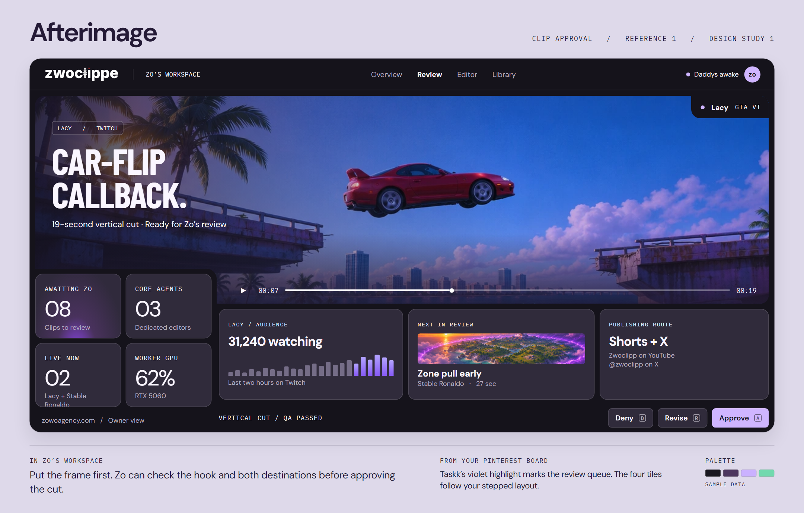
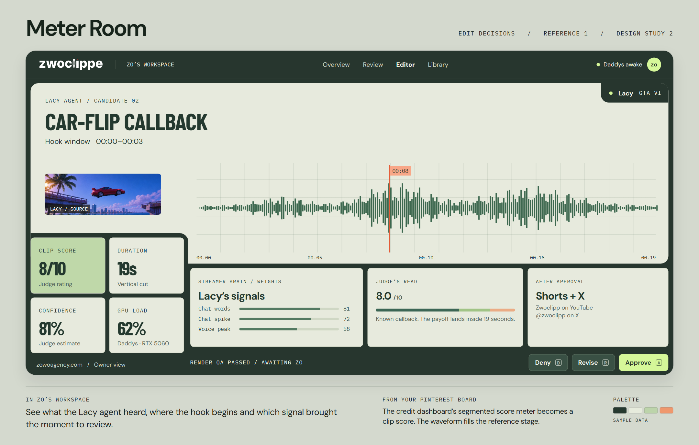
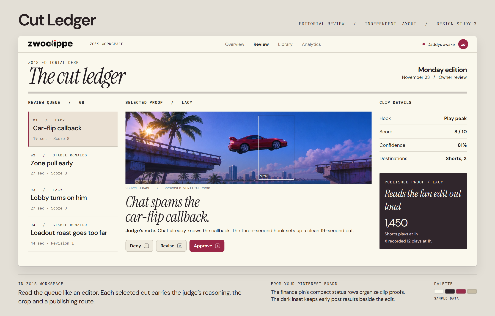
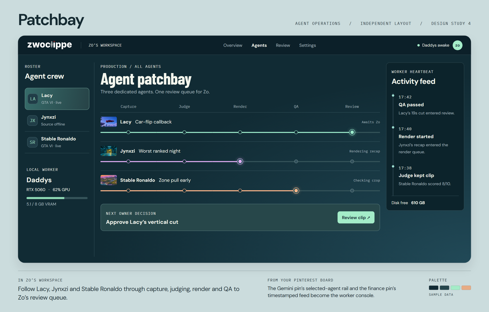
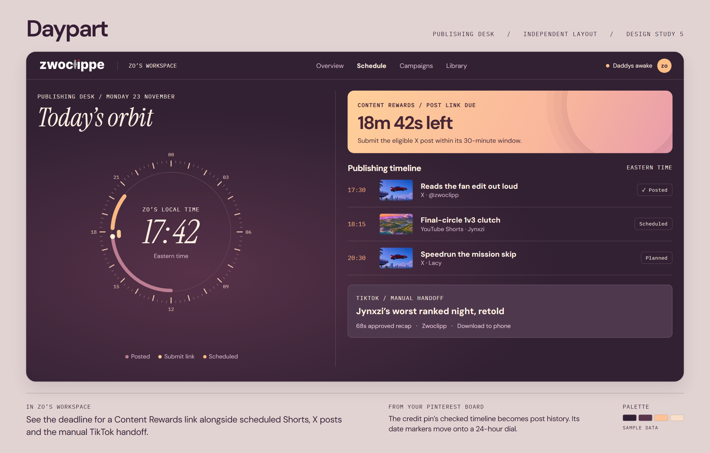

Afterimage
↗Scrub Lacy’s cut, check Shorts and X, then hand the decision to Zo.
Five directions for Zo’s clipping workspace. Open any board for its full-size design and Pinterest notes.

Scrub Lacy’s cut, check Shorts and X, then hand the decision to Zo.

Inspect the 19-second cut alongside the hook window and Lacy’s signal weights.

Compare the proposed crop and judge’s note with the early results of another Lacy post.

See which cut each streamer agent owns, where it is in production and what Daddys is doing.

Keep the Content Rewards deadline, channel schedule and TikTok phone handoff in one view.